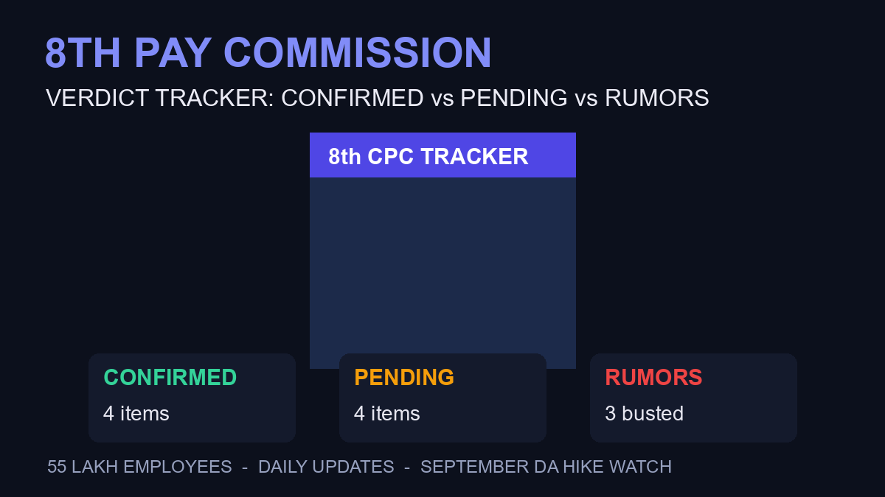

8th Pay Commission Verdict Tracker: What Is Confirmed vs Pending — September 2026

The 8th Pay Commission is trending across India — and the rumor mill is running faster than the facts. With 55 lakh employees and 65 lakh pensioners waiting, here's the tracker: every VERIFIED fact from official announcements, every PENDING item clearly marked, and every rumor labeled as one. Updated daily.
✅ What's CONFIRMED (Verified Facts)
- Pay Commission exists and is operational: gazette notification was issued, though its delay has now crossed 237 days since the January 1, 2026 implementation date was proposed (Upstox)
- State visits are happening: the Commission is holding stakeholder meetings across states — Chandigarh September 16-18 (Punjab, Haryana, Himachal staff) per Livemint, and Puducherry on September 9 per the Commission’s own notice dated July 24 (Economic Times)
- Memorandum submissions from staff unions have ended — the demands are now with the Commission (Moneycontrol)
- DA hike expectation: a separate dearness-allowance increase for central staff is likely to be announced in September (Moneycontrol) — this is separate from the pay revision itself
⏳ What's PENDING (No Official Confirmation)
- The actual raise percentage: nothing official. Every "X% confirmed" headline is speculation
- The fitment formula: not announced
- Implementation timeline: "late 2026" is the working expectation for the announcement, per Upstox — but the raise itself would be retrospective to January 1, 2026 if that holds
- Whether arrears come with the DA hike or separately
🚫 What's RUMOR (Do Not Trust)
- “Specific fitment factor of 2.86X approved” — no official source
- “Salary will double from January” — viral but unverified
- “September 15 announcement date fixed” — no gazette or press release backs this
Why the Gazette Delay of 237 Days Matters
The pay revision was expected to be implemented from January 1, 2026 — but the official gazette notification setting up the Commission’s terms took over 7 months to appear (Upstox). State visits only began in September. That timeline math says: the Commission is still in the consultation phase, not the decision phase. Anyone claiming a "final verdict" this month is ahead of the official process.
What the DA Hike Means vs the Pay Revision
These are two different things that headlines keep mixing:
- DA (Dearness Allowance) hike: the twice-yearly inflation adjustment — likely in September, applies immediately, smaller increase
- Pay Commission revision: the full pay-matrix overhaul — bigger money, but the Commission is still taking inputs. This lands when the Commission reports, not before.
September Timeline: What Happens Next
Sept 9: Puducherry stakeholder meeting (ET) · Sept 16-18: Chandigarh visit for Punjab/Haryana/HP employees (Livemint) · Mid-September: possible DA announcement (Moneycontrol) · Late 2026: working expectation for the pay revision announcement · Jan 1, 2026 (retrospective): the proposed effective date if implemented as expected.
Frequently Asked Questions
When will the 8th Pay Commission be implemented?
The pay revision is expected to be implemented retrospectively from January 1, 2026, but the official announcement is expected by late 2026 (Upstox). The Commission is currently in its consultation phase — state visits continue through September.
Has the 8th Pay Commission announced the fitment factor?
No. No fitment factor, percentage raise, or pay-matrix structure has been officially announced. Viral claims of specific multiples are unverified rumors — the Commission is still holding stakeholder meetings.
Is the DA hike coming in September 2026?
A dearness allowance increase for central government staff is likely to be announced in September (Moneycontrol), separate from the Pay Commission’s revision. The DA hike applies immediately; the pay revision comes with the Commission’s report.
How many people does the 8th Pay Commission cover?
Approximately 55 lakh central government employees and 65 lakh pensioners — over 1.2 crore people whose pay and pensions will be revised once the Commission’s recommendations are implemented.